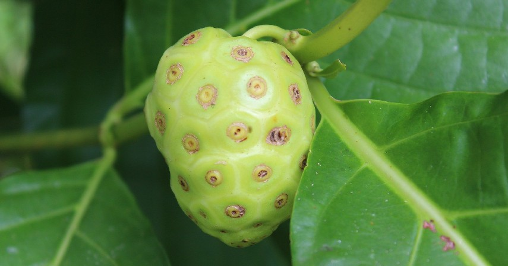
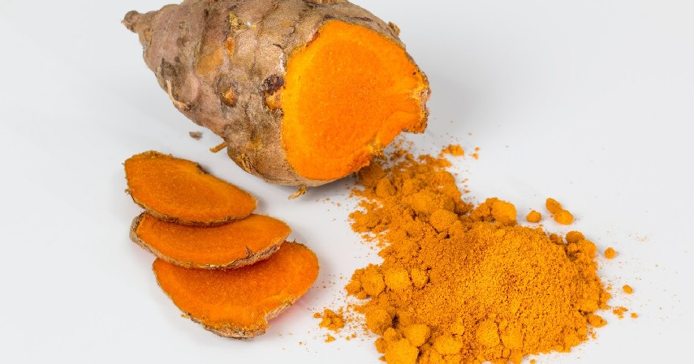
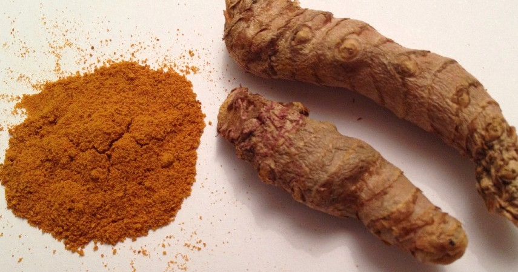
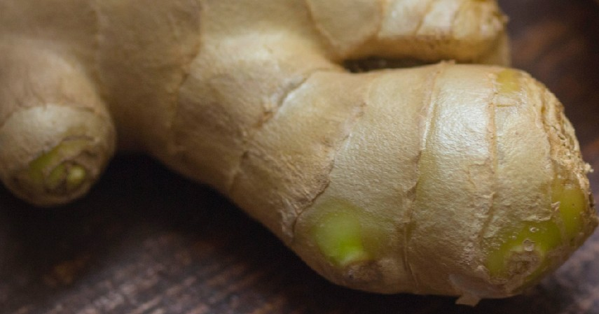

Mengkudu
Tanaman ini memiliki nama latin Morinda citrifolia. Selain menjadi rahasia kecantikan kulit artis Korea Selatan, salah satunya Joy personil girlband Red Velvet yang mengatakan bahwa jus mengkudu membuat kulitnya bersinar cerah dan kencang. Mengkudu juga mampu membunuh bakteri jahat, melancarkan sistem peredaran darah, menjadi zat anti kanker, dan mengatasi radang pada lambung dan usus

Kunyit
Bumbu dapur Indonesia ini masuk ke dalam daftar tanaman obat karena dapat menurunkan tekanan darah tinggi, membantu menghilangkan bau badan, membantu melancarkan siklus menstruasi, meredakan demam, mencerahkan kulit, dan masih banyak lagi lainnya

Temulawak
Tanaman ini memiliki kandungan kurkumin, kalium, dan kalsium yang berfungsi sebagai zat anti radang, pencegah penggumpalan darah, penambah nafsu makan, mengurangi pegal-pegal, mengatasi maag, kembung, diare, dan sakit jantung
Sambiloto
Tanaman ini memiliki kandungan andrografolid yang berfungsi sebagai anti inflamasi, anti bakteri, dan anti virus. Sambiloto juga dapat membantu mengatasi demam, flu, batuk, sakit tenggorokan, dan masalah pernapasan lainnya

Daun sirih
Tanaman ini memiliki kandungan minyak atsiri, flavonoid, dan tanin yang berfungsi sebagai anti inflamasi, anti bakteri, dan anti virus. Daun sirih juga dapat membantu mengatasi bau mulut, sakit gigi, dan masalah kesehatan lainnya

Jahe
Tanaman ini memiliki kandungan flavonoid, saponin, dan tanin yang berfungsi sebagai anti inflamasi, anti bakteri, dan anti virus. Meniran juga dapat membantu mengatasi masalah ginjal, hipertensi, dan masalah kesehatan lainnya.